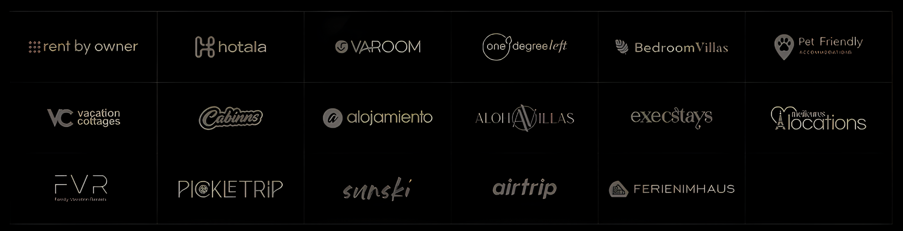

Discover how AI transforms hotel reviews into tailored experiences with sentiment analysis. Dive into our guide for a revolutionized travel journey.
In today’s digital age, artificial intelligence (AI) and machine learning are revolutionizing the travel industry, particularly in the realm of hotel reviews and personalized recommendations. These technologies are transforming the way travelers make decisions about their accommodations, offering unprecedented levels of personalization and insight. At the heart of this revolution lies sentiment analysis, a powerful tool that enables us to understand and interpret customer feedback at scale, providing valuable insights for both travelers and businesses in the hospitality sector.
The impact of AI on travel planning cannot be overstated. By harnessing the power of machine learning algorithms, travel platforms can now process and analyze millions of hotel reviews in real-time, extracting meaningful patterns and insights that would be impossible for humans to discern manually. This capability not only enhances the accuracy of hotel recommendations but also significantly improves the overall travel planning experience for consumers.
Sentiment analysis is a sophisticated technique that combines natural language processing and machine learning to identify and extract subjective information from text data. This powerful tool goes beyond simple keyword matching, delving into the nuances of human expression to understand the emotions, opinions, and attitudes conveyed in written content. In the context of hotel reviews, sentiment analysis plays a crucial role in interpreting the complex and often multifaceted feedback provided by guests.
The algorithms behind sentiment analysis are designed to understand the subtleties of human language, including context, tone, and intent. They can detect sarcasm, identify implied sentiments, and weigh the importance of different aspects of a review. When applied to hotel reviews, these algorithms can differentiate between positive and negative feedback with remarkable accuracy, providing a nuanced understanding of guest experiences.
For example, a review stating “The room was spacious, but the noise from the street was unbearable” would be interpreted as having mixed sentiment. The algorithm would recognize the positive feelings about the room size while also acknowledging the significant negative impact of the noise levels. This ability to parse complex sentiments allows for a more accurate representation of guest experiences than simple star ratings or binary positive/negative classifications.
Understanding customer satisfaction is paramount in the hospitality industry. Sentiment analysis allows hotels to gauge overall guest satisfaction quickly and efficiently, identifying trends and areas for improvement. This data-driven approach enables hotels to make informed business decisions, such as allocating resources to address common complaints or enhancing popular amenities.
Moreover, sentiment analysis provides a deeper understanding of customer emotions and motivations. It can reveal subtle nuances in feedback that might be missed by traditional survey methods. For instance, it might uncover that while guests generally rate a hotel’s cleanliness highly, there’s an underlying frustration with the check-in process that’s affecting overall satisfaction. This level of insight allows hotels to prioritize improvements that will have the most significant impact on guest experience.
Machine learning is the engine that powers effective sentiment analysis, enabling AI algorithms to learn from vast amounts of data and improve their accuracy over time. This iterative learning process is what makes machine learning-based sentiment analysis so powerful and adaptable to the ever-changing landscape of customer feedback.
Machine learning algorithms analyze hotel reviews to identify patterns and relationships within the data. They learn to recognize the language and context associated with different sentiments, becoming more adept at interpreting nuanced feedback as they process more reviews. For instance, these algorithms can learn that phrases like “not bad” often indicate positive sentiment despite the presence of a negative word, or that “cheap” can be positive when referring to price but negative when describing quality.
This continuous learning process allows the algorithms to adapt to changing language trends and customer expectations. As new slang, expressions, or cultural references emerge in reviews, the machine learning models can adjust their understanding to maintain accuracy. This adaptability is crucial in the dynamic world of travel and hospitality, where guest expectations and the language used to describe experiences are constantly evolving.
The true power of machine learning in sentiment analysis lies in its ability to process enormous volumes of data rapidly and efficiently. This scalability allows travel platforms to analyze millions of reviews in real-time, providing up-to-date insights and recommendations. As datasets grow and evolve, machine learning algorithms can adapt seamlessly, ensuring that the analysis remains relevant and accurate.
Furthermore, machine learning algorithms can identify patterns and correlations that might not be immediately apparent to human analysts. They can, for example, recognize that certain combinations of features (such as location, room size, and staff friendliness) have a disproportionate impact on overall guest satisfaction. This level of insight can be invaluable for hotels looking to optimize their offerings and improve guest experiences.
The process of transforming raw hotel reviews into personalized recommendations involves several sophisticated steps, each leveraging the power of AI and machine learning to deliver accurate and relevant results.
First, AI algorithms categorize reviews based on overall sentiment, typically classifying them as positive, negative, or neutral. This initial categorization provides a broad overview of guest satisfaction levels. However, the real power of these algorithms lies in their ability to go beyond simple classification.
The next step involves feature extraction, where the AI identifies and extracts specific aspects of the hotel experience mentioned in the reviews. These features might include amenities (like pool quality or Wi-Fi speed), service elements (such as staff friendliness or check-in efficiency), or location attributes (proximity to attractions or noise levels). The AI doesn’t just note the presence of these features but also analyzes the sentiment associated with each one.
This feature extraction process creates a detailed profile of each hotel based on guest experiences. For example, a hotel might be characterized as having excellent staff service, a convenient location, but mediocre food quality. This nuanced understanding allows for more accurate matching with traveler preferences.
Using the extracted features and sentiment data, AI systems can generate highly personalized hotel recommendations. By matching these features with individual user preferences and past behaviors, the system can suggest hotels that are likely to meet or exceed a traveler’s expectations.
The personalization process takes into account various factors:
1. User history: Past bookings, searches, and interactions with the platform.
2. Stated preferences: Amenities or features the user has explicitly indicated as important.
3. Implicit preferences: Inferred from user behavior, such as the types of hotels they frequently view or book.
4. Contextual factors: Such as the purpose of the trip (business vs. leisure) or travel companions (solo, couple, family).
For instance, if a user frequently mentions enjoying hotel fitness centers in their reviews, the AI might prioritize hotels with well-reviewed gym facilities in its recommendations. Similarly, if a user often books hotels in quiet locations for business trips, the system might suggest properties known for their peaceful environments and work-friendly amenities.
This personalized approach significantly enhances the relevance of recommendations, saving users time and increasing the likelihood of a satisfactory hotel choice.
AI brings several distinct advantages to the travel planning process, particularly in the realm of hotel selection. These advantages stem from AI’s ability to process and analyze vast amounts of data, learn from patterns, and adapt to individual user preferences.
AI-powered systems, like those developed by TravelAI, excel at delivering highly personalized recommendations. By analyzing a user’s past reviews, search history, and stated preferences, these systems can offer tailored suggestions that align closely with individual tastes and requirements.
The level of personalization goes beyond simple matching of amenities or price ranges. AI can understand complex preference patterns, such as a traveler who prefers boutique hotels in city centers for leisure trips but opts for well-known chain hotels near airports for business travel. It can also adapt to changing preferences over time, noticing if a user starts showing interest in eco-friendly accommodations or family-oriented resorts.
This deep level of personalization not only improves the user experience but also increases the likelihood of successful bookings and positive travel experiences.
The ability of AI to rapidly analyze vast amounts of data significantly streamlines the decision-making process for travelers. Instead of sifting through hundreds of reviews manually, users can rely on AI-generated insights to quickly identify hotels that meet their criteria.
This efficiency is particularly valuable in today’s fast-paced world, where travelers often need to make quick decisions. AI can provide a shortlist of highly relevant options, complete with summaries of key features and potential drawbacks, allowing users to make informed decisions in a fraction of the time it would take to research manually.
Moreover, AI can handle complex multi-criteria decision-making processes that would be challenging for humans. For example, it can balance factors like price, location, amenities, and review sentiment to find the optimal match for a user’s preferences, even when those preferences involve trade-offs.
Advanced sentiment analysis techniques provide more nuanced and accurate insights than traditional rating systems. TravelAI’s algorithms, for example, can analyze sentiment across multiple dimensions such as cleanliness, service quality, and value for money, offering a more comprehensive view of each hotel’s strengths and weaknesses.
This multi-dimensional analysis allows for a more accurate matching of hotels to user preferences. For instance, a hotel with a high overall rating might not be recommended to a user who prioritizes quiet rooms if the AI detects a pattern of complaints about noise levels in the reviews.
Furthermore, AI can identify trends and patterns in review data that might not be apparent from average ratings alone. It might notice, for example, that a hotel’s reviews have been steadily improving over the past six months, indicating recent upgrades or management changes that could make it a good choice for travelers.

TravelAI’s advanced AI algorithms can cater to a wide range of specific preferences, demonstrating the power of personalized recommendations in the travel industry. These AI-driven choices go beyond simple categorizations, taking into account the nuanced preferences and priorities of individual travelers.
For travelers seeking vibrant nightlife, TravelAI can identify hotels with exceptional bars based on review sentiment. The AI doesn’t just look for mentions of a bar in reviews. It analyzes the sentiment around descriptions of the atmosphere, drink quality, service, and unique features.
For instance, the system might highlight a boutique hotel in New York City that consistently receives praise for its rooftop bar. The AI would have noticed patterns in reviews mentioning the “creative cocktail menu,” “expert mixologists,” and “breathtaking views of the Manhattan skyline.” It might also consider factors like the bar’s popularity among locals, which could be an indicator of its quality and authenticity.
Families traveling with children can benefit from AI-powered recommendations that focus on kid-friendly amenities. TravelAI might suggest a resort in Orlando that receives high praise for its children’s pool, organized activities, and spacious family rooms.
The AI would consider a complex array of factors in making this recommendation. It might analyze reviews for mentions of child safety features, the variety and quality of kids’ activities, the friendliness of staff towards children, and the availability of family-oriented dining options. The system could also consider negative sentiments, ensuring that hotels with frequent complaints about noise levels or lack of child-proofing are not recommended to families.
Food enthusiasts can rely on AI to find hotels with outstanding dining options. TravelAI could recommend a hotel in Paris known for its Michelin-starred restaurant, based on consistently positive sentiment in reviews about the dining experience.
The AI would go beyond just identifying hotels with highly-rated restaurants. It might analyze reviews for mentions of specific culinary experiences, such as innovative cooking techniques, locally-sourced ingredients, or unique fusion cuisines. The system could also consider factors like the variety of dining options, the quality of room service, and even the hotel’s proximity to other highly-regarded restaurants in the area.
Business travelers seeking peace and productivity can benefit from AI-driven suggestions for quiet, well-equipped hotels. TravelAI might highlight a hotel in London’s financial district that receives high marks for its soundproofed rooms and excellent work spaces.
In making this recommendation, the AI would analyze reviews for mentions of factors important to business travelers. This could include the quality and speed of Wi-Fi, the comfort of work areas in the rooms, the availability of meeting spaces, and the efficiency of business center services. The system would also pay particular attention to comments about noise levels, prioritizing hotels that consistently receive praise for their quiet environments.
Health-conscious travelers can use AI to find hotels with exceptional wellness amenities. TravelAI could recommend a resort in Bali that consistently receives glowing reviews for its world-class spa and yoga facilities.
The AI would analyze reviews for detailed descriptions of wellness amenities, looking for patterns of positive sentiment around factors like the variety and quality of spa treatments, the expertise of wellness staff, the tranquility of the environment, and the range of fitness options available. It might also consider the hotel’s proximity to natural features conducive to wellness, such as beaches or hiking trails.
For travelers seeking one-of-a-kind experiences, AI can uncover hidden gems with unique themes. TravelAI might suggest a quirky art-themed hotel in Berlin that garners enthusiastic reviews for its distinctive decor and immersive artistic experiences.
In identifying these unique properties, the AI would look for patterns in reviews that indicate a hotel offers something out of the ordinary. This could include mentions of unusual decor, themed rooms, interactive art installations, or unique guest experiences. The system would also consider the overall sentiment around these unique features, ensuring that they enhance rather than detract from the guest experience.
While AI offers tremendous potential in the hospitality industry, its implementation is not without challenges. Understanding and addressing these challenges is crucial for businesses looking to harness the full power of AI in their operations.
Data quality and potential biases in reviews can impact the accuracy of AI recommendations. Reviews can be subjective, and some may be fake or manipulated, which can skew the AI’s understanding if not properly addressed. Additionally, there may be biases in the review data itself, such as an overrepresentation of extremely positive or negative reviews, which the AI needs to be trained to recognize and account for.
Integrating AI solutions with existing hotel management systems can present technical hurdles. Many hotels have legacy systems that may not be easily compatible with new AI technologies. Ensuring seamless data flow between these systems and the AI platform can be a complex and sometimes costly process.
There’s also the challenge of user adoption and trust. Both hotel staff and travelers need to feel comfortable relying on AI-generated recommendations, which requires transparency in how these recommendations are generated and a clear demonstration of their value.
To address these challenges, it’s crucial to implement robust data preprocessing and cleaning procedures. This includes methods for detecting and filtering out fake or irrelevant reviews, normalizing data across different sources, and addressing potential biases in the dataset.
Regular monitoring and refinement of AI algorithms based on user feedback and changing trends are also essential for maintaining accuracy and relevance. This might involve A/B testing of different recommendation algorithms, continual analysis of user interaction with AI-generated recommendations, and periodic retraining of models with fresh data.
It’s also important to focus on user education and transparency. Providing clear explanations of how AI is used in the recommendation process can help build trust among users. For hotel staff, comprehensive training on how to interpret and use AI-generated insights is crucial for effective implementation.
TravelAI employs advanced data filtering techniques to ensure high-quality input for its analysis. This includes sophisticated algorithms for detecting fake reviews, methods for normalizing sentiment across different cultural contexts, and techniques for balancing the influence of extreme opinions.
The company also offers seamless integration capabilities, allowing for smooth implementation with various hotel management systems and APIs. TravelAI’s solutions are designed with flexibility in mind, capable of interfacing with a wide range of existing systems to minimize disruption and maximize value.
To address the challenge of user adoption, TravelAI provides comprehensive educational resources and transparent explanations of its AI processes. The company also offers ongoing support and consultation to ensure that clients can fully leverage the insights provided by the AI system.
AI-driven recommendations enable hotels to deliver highly personalized experiences tailored to individual guest preferences. This can lead to increased guest satisfaction, higher likelihood of repeat bookings, and positive word-of-mouth recommendations.
Furthermore, insights from AI analysis can help hotels optimize resource allocation, such as staff scheduling or inventory management, based on predicted demand. For example, if the AI system predicts a surge in families visiting during a particular period, the hotel can ensure that appropriate staff and amenities are available to cater to this demographic.
AI can also enhance operational efficiency by automating many aspects of the guest experience, from personalized pre-arrival communications to post-stay follow-ups. This not only improves the guest experience but also frees up staff to focus on high-value interactions that require a human touch.
To successfully integrate AI into travel planning and hotel selection processes, consider the following guidelines:
Start by defining clear objectives and key performance indicators (KPIs) for AI implementation. These might include metrics such as increase in booking conversions, improvement in guest satisfaction scores, or reduction in customer service inquiries. Having clear goals will help guide the implementation process and provide benchmarks for measuring success.
When selecting an AI partner, evaluate their expertise, track record, and alignment with your specific goals and requirements. Look for providers with experience in the travel and hospitality sector, and consider factors such as the scalability of their solutions, the quality of their customer support, and their approach to data privacy and security.
It’s also important to involve key stakeholders from across your organization in the implementation process. This might include representatives from IT, customer service, marketing, and operations. Their input can help ensure that the AI solution addresses the needs of all departments and integrates smoothly with existing workflows.
Leverage AI-generated insights to inform strategic decisions and improve travel planning processes. This might involve using AI predictions to guide inventory management, pricing strategies, or marketing campaigns. For example, if AI analysis reveals a growing trend in eco-friendly travel preferences among your customers, you might adjust your marketing to highlight sustainable practices at your recommended hotels.
Regularly measure the impact of AI implementation on key metrics, such as customer satisfaction or booking conversion rates, to demonstrate return on investment. Use these metrics to refine your AI strategy over time, focusing resources on the areas that show the most significant impact.
Remember that the value of AI lies not just in automating existing processes, but in uncovering new insights and opportunities. Encourage a culture of experimentation and learning, where teams are empowered to test new ideas based on AI-generated insights.
TravelAI offers a straightforward integration process, with step-by-step guidance for incorporating their AI solutions into existing travel planning or hotel management systems. The process typically involves the following steps:
The company also provides comprehensive training and support services to ensure smooth implementation and user adoption. This includes training sessions for staff, detailed documentation, and ongoing technical support.
TravelAI’s solutions are designed to be scalable and adaptable, allowing businesses to start with basic functionalities and gradually expand as they become more comfortable with the technology. This phased approach can help manage costs and minimize disruption to existing operations.
As we’ve explored, AI and machine learning are transforming the way travelers select hotels and plan their trips. By leveraging sentiment analysis of hotel reviews, these technologies offer unprecedented levels of personalization and insight.
AI-powered analysis of hotel reviews enables highly personalized recommendations, efficient decision-making, and improved accuracy in understanding hotel quality. This technology enhances the travel experience by meeting individual preferences and saving time in the planning process.
The use of sentiment analysis allows for a nuanced understanding of guest experiences, going beyond simple ratings to capture the complexities of traveler satisfaction. Machine learning algorithms continuously improve their accuracy, adapting to changing language trends and evolving traveler expectations.
Implementing AI in travel planning can lead to significant benefits, including enhanced customer experiences, improved operational efficiency, and data-driven strategic decision-making. However, successful implementation requires careful planning, clear objectives, and a commitment to ongoing refinement and learning.
TravelAI stands out with its cutting-edge AI technology and proven track record in the travel and hospitality industry. Their advanced algorithms and sentiment analysis capabilities offer unparalleled insights and personalization.
The company’s solutions are designed to be flexible and scalable, allowing businesses of all sizes to benefit from AI-powered travel planning. TravelAI’s commitment to ongoing support and education ensures that clients can fully leverage the power of AI to enhance their operations and customer experiences.
Moreover, TravelAI’s focus on data privacy and security provides peace of mind in an era of increasing concern about data protection. Their ethical approach to AI development aligns with growing consumer expectations for responsible use of technology.
We invite you to experience the benefits of AI-powered travel planning with TravelAI. Take the first step towards smarter, more personalized travel planning today. Join the growing number of travel businesses that are leveraging the power of AI to stay ahead in a competitive market and deliver exceptional experiences to their customers.
The future of travel is personalized, efficient, and insight-driven. With TravelAI, you can be at the forefront of this exciting transformation. Don’t let your business fall behind – embrace the power of AI and start offering your customers the personalized travel experiences they crave.